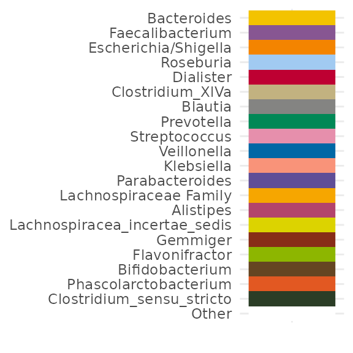
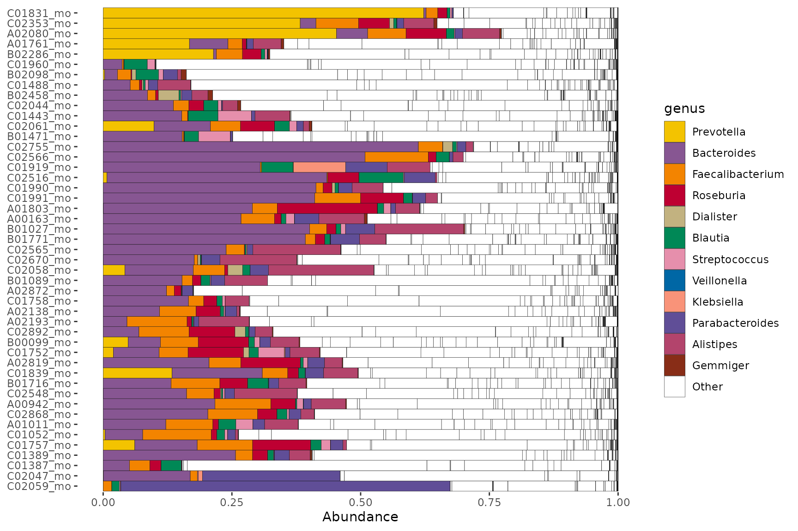
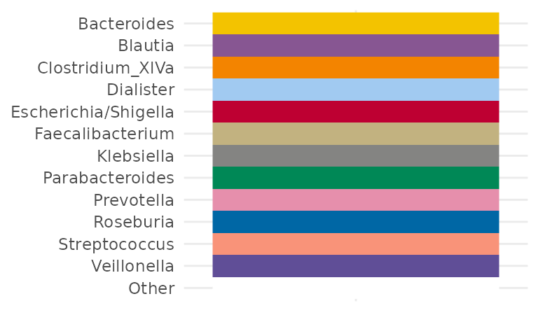
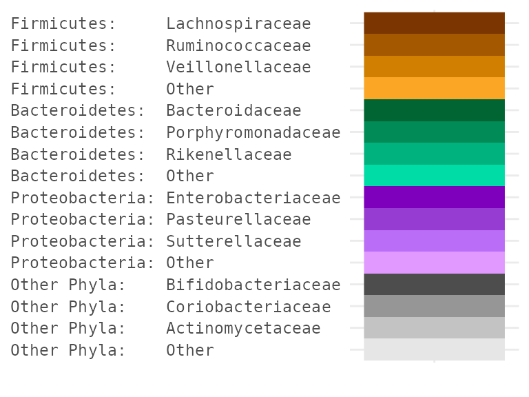
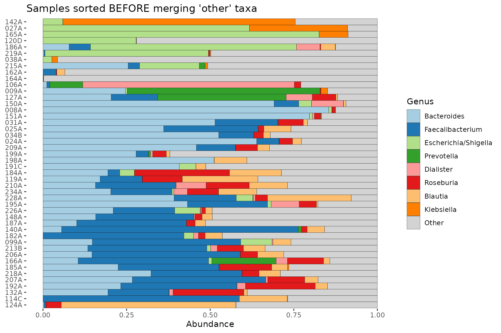
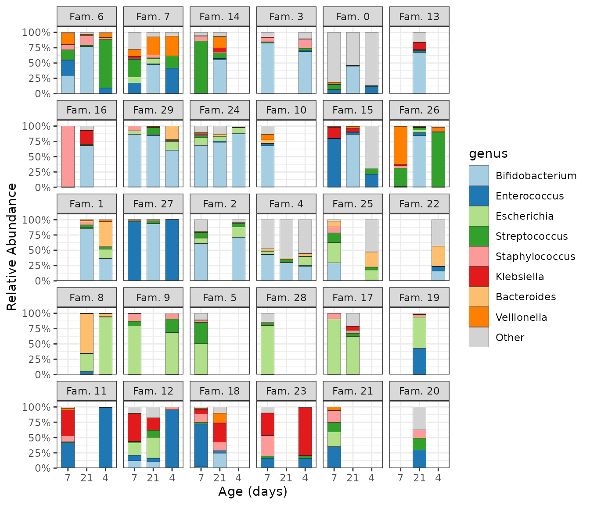
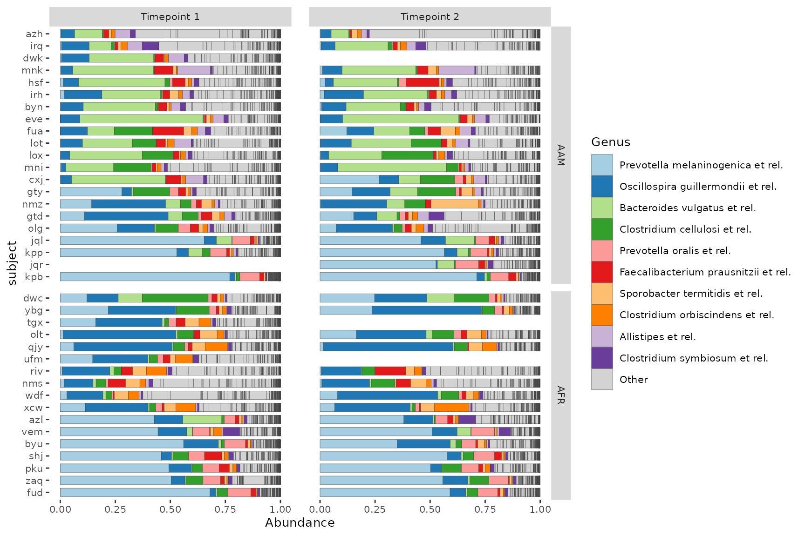

options(width = 100)
library(microViz)
library(phyloseq)
library(ggplot2)
library(patchwork) # for arranging groups of plots
knitr::opts_chunk$set(fig.height = 6, fig.width = 9)
# get example phyloseq data from corncob package and tidy up
pseq <- microViz::ibd %>%
tax_filter(min_prevalence = 2) %>%
tax_fix() %>%
phyloseq_validate()The comp_barplot function allows you to visualize the
taxonomic compositions of your microbiome samples in a flexible,
scalable, group-able, and visually appealing way.
Quick example barplot
Visualize the top Genera across all the female samples from this inflammatory bowel disease study dataset. The order of the samples is automatically set by their “bray”-curtis dissimilarity.
By default, the top 8 taxa are shown. These taxa are chosen by their total count abundance across all plotted samples.
pseq %>%
ps_filter(gender == "female") %>%
comp_barplot(tax_level = "Genus") +
coord_flip() # horizontal bars are often more readable
#> Registered S3 method overwritten by 'seriation':
#> method from
#> reorder.hclust veganCustomising the barplot
comp_barplot arguments
The output of comp_barplot can be customised in several ways. See the comment alongside each argument for an explanation of its effect.
pseq %>%
ps_filter(gender == "female") %>%
comp_barplot(
tax_level = "Genus",
label = "DiseaseState", # name an alternative variable to label axis
n_taxa = 15, # give more taxa unique colours
taxon_renamer = function(x) stringr::str_replace_all(x, "_", " "), # remove underscores
other_name = "Other genera", # set custom name for the "other" category
merge_other = FALSE, # split the "Other" category to display alpha diversity
bar_width = 0.7, # reduce the bar width to 70% of one row
bar_outline_colour = "grey5" # is the default (use NA to remove outlines)
) +
coord_flip()
Other notes:
- Dissimilarity is calculated using only the visibly distinct taxa, to
optimize sorting for visual similarity. You can change this by setting
order_with_all_taxa = TRUE, to always use all taxa for similarity sorting. - The colour palette is important, to allow (adjacent) taxa to be
distinguished. The palette microViz uses is generated by the
distinct_palettefunction, which starts with the Paired and Dark2 palettes from ColorBrewer and continues with further distinct colours generated at http://medialab.github.io/iwanthue/ (all colors, soft k-means).
Colour palette customisation
You can use the tax_palette() function to help create a
custom colour palette for use in (multiple) barplots. Try to ensure you
assign a colour for every taxon you expect to see separately on your
barplot.
myPal <- tax_palette(
data = pseq, rank = "Genus", n = 25, pal = "greenArmytage",
add = c(Other = "white")
)
tax_palette_plot(myPal)
# Override existing values
myPal["Bacteroides"] <- "grey75"
myPal["Streptococcus"] <- "black"
myPal["Klebsiella"] <- "darkorange"
# Add more values
myPal["Enterobacteriaceae Family"] <- "hotpink"
tax_palette_plot(myPal)
pseq %>%
ps_filter(gender == "female") %>%
comp_barplot(
tax_level = "Genus", palette = myPal,
n_taxa = 12, other_name = "Other", merge_other = FALSE
) +
coord_flip()
Alternative taxa ordering
By default taxa are ordered by overall sum of their
counts across all samples in your dataset. You can sort taxa by another
function, such as prev for prevalence.
pseq %>%
ps_filter(gender == "male") %>%
comp_barplot(tax_level = "Genus", tax_order = prev, merge_other = FALSE) +
coord_flip()
Customising taxa order
It is easy (since microViz version 0.9.6) to set a custom order of
taxa to display with comp_barplot. For example you might be
particularly interested in the abundance of Proteobacteria genera in
your samples, and want them to appear first, regardless of their overall
abundance.
interestingGenera <- pseq %>%
tax_select("Proteobacteria") %>%
tax_top(n = 10, rank = "Genus")
interestingGenera
#> [1] "Escherichia/Shigella" "Klebsiella" "Haemophilus"
#> [4] "Sutterella" "Enterobacteriaceae Family" "Parasutterella"
#> [7] "Cronobacter" "Comamonadaceae Family" "Raoultella"
#> [10] "Proteus"
pseq %>%
ps_filter(gender == "male") %>%
tax_sort(by = sum, at = "Genus") %>% # put other taxa in a reasonable order
comp_barplot(
tax_level = "Genus", n_taxa = 10, merge_other = FALSE, other_name = "Other",
palette = distinct_palette(10, pal = "kelly", add = "grey90"),
tax_order = interestingGenera # this is the reordering magic
) +
coord_flip()
Custom taxa order and colour palette
Customising taxa order and colour palette are often needed together. The pair nicely as you can use the names from a custom palette to fix the taxa order.
customPal <- tax_palette(
data = pseq, rank = "Genus", pal = "kelly", n = 20, add = c(Other = "white")
)
tax_palette_plot(customPal)
# I'm interested in Prevotella, so let's put that first
names(customPal) <- c("Prevotella", setdiff(names(customPal), "Prevotella"))
tax_palette_plot(customPal)
pseq %>%
ps_filter(gender == "female") %>%
tax_sort(by = sum, at = "Genus", tree_warn = FALSE) %>%
comp_barplot(
tax_level = "Genus", merge_other = FALSE,
n_taxa = 12,
other_name = "Other", # must match a name in palette
tax_order = names(customPal),
palette = customPal
) +
coord_flip()Let’s look at the abundance of these same genera in a separate dataset.
data("shao19")
shao19 %>%
ps_filter(family_role == "mother", age == 38) %>%
tax_sort(by = sum, at = "genus", tree_warn = FALSE) %>%
comp_barplot(
tax_level = "genus", n_taxa = 12, other_name = "Other", merge_other = FALSE,
tax_order = names(customPal), palette = customPal
) +
coord_flip()
#> Warning in tax_reorder(ps, tax_order = tax_order, tree_warn = FALSE, ignore = other_name): 5 taxa
#> specified in tax_order are not in phyloseq ps: they are ignored
Not all the genera will be present in the other dataset, so we get a warning. Notice also that whilst the genus-colour pairings are the same, the legends are not identical, because the taxa that are not in this 2nd set don’t appear in its legend.
Merging phyloseq objects to compare them
The best way to create harmonised barcharts for two (or more) separate datasets (e.g. your data and a public dataset) is to merge the datasets. Often the data generation methods (e.g. primer sets) won’t match, making ASV or species-level merging impossible (or not advisable).
You can still try merging at a higher taxonomic rank, such as Class, for comparison.
dataset1 <- ps_filter(pseq, gender == "female")
dataset2 <- ps_filter(shao19, family_role == "mother", age == 38)
# first make sure the rank_names are the same format (e.g. both lowercase)
colnames(dataset1@tax_table) <- rank_names(dataset1) %>% tolower()
# remove ranks that are not shared
dataset1 <- dataset1 %>% tax_mutate(kingdom = NULL)
# create a dataset ID variable to distinguish the two datasets after merging
dataset1 <- dataset1 %>% ps_mutate(dataset = "IBD study")
dataset2 <- dataset2 %>% ps_mutate(dataset = "Birth cohort mothers")
# aggregate and merge
combined <- phyloseq::merge_phyloseq(
dataset1 %>% tax_agg("class") %>% ps_get(),
dataset2 %>% tax_agg("class") %>% ps_get()
)
combined
#> phyloseq-class experiment-level object
#> otu_table() OTU Table: [ 28 taxa and 93 samples ]
#> sample_data() Sample Data: [ 93 samples by 26 sample variables ]
#> tax_table() Taxonomy Table: [ 28 taxa by 2 taxonomic ranks ]Now we can plot the two datasets in separate facets of the same plot.
combined %>%
comp_barplot("class", facet_by = "dataset", n_taxa = 12) +
coord_flip()Or we could plot them as separate plots with the group argument.
plots <- combined %>% comp_barplot("class", n_taxa = 12, group_by = "dataset")
# combine plots with shared legend
patchwork::wrap_plots(plots, nrow = 2, guides = "collect") &
theme(axis.ticks.x = element_blank(), axis.text.x = element_blank())Alphabetical top taxa
Sometimes you might prefer the top taxa to be shown in alphabetical order.
# set up for alphabetical sorting
topTaxa <- pseq %>%
ps_filter(gender == "male") %>%
tax_top(n = 9, rank = "Genus") %>%
sort() # this makes them alphabetical
# plot with alphabetical sorting
pseq %>%
ps_filter(gender == "male") %>%
tax_sort(by = sum, at = "Genus") %>% # this orders all genera by abundance
comp_barplot(
tax_order = topTaxa, # this brings the named taxa to the front
tax_level = "Genus", n_taxa = 9, merge_other = FALSE, other_name = "Other"
) +
coord_flip()
Another way to do this is by reordering the names of a custom palette, like this:
# don't add an "Other" colour for now
alphaPal <- tax_palette(pseq, pal = "kelly", rank = "Genus", n = 12, add = NA)
names(alphaPal) <- sort(names(alphaPal))
# now add the "Other" colour to the end
alphaPal["Other"] <- "white"
tax_palette_plot(alphaPal)
pseq %>%
ps_filter(gender == "male") %>%
comp_barplot(
tax_level = "Genus", n_taxa = 12, merge_other = FALSE,
other_name = "Other", # must match a name in palette
tax_order = names(alphaPal), palette = alphaPal
) +
coord_flip()Custom hierarchical sorting and palette
A complex example showing one method for obtaining a hierarchical colour palette with hues specified by Phylum (or another high rank) and shades of the hue specified by Family (or another low rank).
hueRank <- "Phylum"
hueRankPlural <- "Phyla"
shadeRank <- "Family"
# Sort phyloseq at lower, and then higher ranks
pseq2 <- pseq %>%
ps_filter(gender == "male") %>%
tax_sort(by = sum, at = shadeRank) %>%
tax_sort(by = sum, at = hueRank) %>%
tax_agg(rank = shadeRank)
# Specify number of hues and shades desired
nHues <- 3 # "Other" phyla will be shades of grey
nShades <- 4 # "Other" families will be the lightest shade of each hue
hierarchicalPalInfo <- data.frame(
hue = as.vector(tt_get(pseq2)[, hueRank]),
shade = as.vector(tt_get(pseq2)[, shadeRank]),
counts = taxa_sums(otu_get(pseq2))
)
hierarchicalPalInfo <- hierarchicalPalInfo %>%
dplyr::mutate(
hue = forcats::fct_other(
f = hue, keep = unique(hue)[seq_len(nHues)],
other_level = paste("Other", hueRankPlural)
),
nChrHue = nchar(as.character(hue)), padHue = max(nChrHue) - nChrHue
) %>%
dplyr::group_by(hue) %>%
dplyr::mutate(
shade = forcats::fct_other(
f = shade, keep = unique(shade)[seq_len(nShades - 1)],
other_level = "Other"
)
) %>%
dplyr::ungroup() %>%
dplyr::mutate(
nChrShade = nchar(as.character(shade)), padShade = max(nChrShade) - nChrShade,
Taxa = paste0(hue, ": ", strrep(" ", padHue), shade, strrep(" ", padShade))
)
hierarchicalPalMatrix <- matrix(
data = sapply(
X = seq(from = 30, to = 75, length.out = nShades),
FUN = function(l) scales::hue_pal(l = l, h.start = 30)(n = nHues)
),
byrow = TRUE, ncol = nHues
)
hierarchicalPalMatrix <- cbind(hierarchicalPalMatrix, grey.colors(n = nShades))
hierarchicalPal <- hierarchicalPalMatrix %>%
as.vector() %>%
setNames(unique(hierarchicalPalInfo$Taxa))
tax_palette_plot(hierarchicalPal) +
theme(axis.text.y.left = element_text(family = "mono"))
pseq2 %>%
ps_get() %>%
tax_mutate("Phylum: Family" = hierarchicalPalInfo$Taxa, .keep = "none") %>%
comp_barplot(
tax_level = "Phylum: Family", n_taxa = length(hierarchicalPal),
tax_order = "asis", palette = hierarchicalPal, bar_width = 0.975
) +
coord_flip() +
theme(legend.text = element_text(family = "mono")) # for text alignment
Averages, faceting or grouping?
Averaging compositions
Sometimes, to compare microbial compositions across groups, average compositions are presented. However that “group-averaging” approach hides a lot of within-group variation, as well as any imbalance in group sizes.
pseq %>%
ps_select(age, DiseaseState) %>% # avoids lots of phyloseq::merge_samples warnings
ps_filter(DiseaseState != "IBDundef") %>%
phyloseq::merge_samples(group = "DiseaseState") %>%
comp_barplot(tax_level = "Genus", n_taxa = 12, bar_width = 0.8) +
coord_flip() + labs(x = NULL, y = NULL)
#> Warning in asMethod(object): NAs introduced by coercion
Faceting
Faceting is where you show each group on a small subplot.
In the plot below can you see that at minority of UC samples have a high abundance of Escherichia/Shigella or Streptococcus. The merged bars above might have misled you into thinking all UC samples had somewhat increased abundances of these taxa.
pseq %>%
ps_filter(DiseaseState != "IBDundef") %>% # only one sample in this group
# convert DiseaseState into ordered factor to control order of facets
ps_mutate(
DiseaseState = factor(DiseaseState, levels = c("UC", "nonIBD", "CD"))
) %>%
comp_barplot(
tax_level = "Genus", n_taxa = 15,
bar_outline_colour = NA, facet_by = "DiseaseState"
) +
coord_flip()Instead of using the facet_by argument in
comp_barplot you can have more control over faceting by
doing it yourself afterwards. You can use facet_grid to create row
facets.
pseq %>%
ps_filter(DiseaseState != "IBDundef") %>% # only one sample in this group
# convert DiseaseState into ordered factor to control order of facets
ps_mutate(
DiseaseState = factor(DiseaseState, levels = c("UC", "CD", "nonIBD"))
) %>%
comp_barplot(
tax_level = "Genus", n_taxa = 15,
sample_order = "bray", bar_outline_colour = NA,
) +
facet_grid(
rows = vars(DiseaseState),
scales = "free", space = "free" # these options are critically important!
) +
coord_flip() +
theme(axis.text.y = element_blank(), axis.ticks.y = element_blank())
Grouping
For even greater control than faceting, comp_barplot
allows you to generate separate ggplot objects for each group, whilst
maintaining the same taxa colour scheme.
You can assemble these plots into one figure with, for example, the
patchwork package, or keep them separate.
Note that the ordering of the samples may differ between facet and group_by approaches. In the group_by method, the ordering of the samples by similarity is done separately for each group, whereas in the facet_by method, similarity-based ordering is done with all samples and then the samples are separated by facet afterwards.
plot_list <- pseq %>%
ps_filter(DiseaseState != "IBDundef") %>%
comp_barplot(n_taxa = 15, tax_level = "Genus", group_by = "DiseaseState")
# Plot them side by side with the patchwork package.
patch <- patchwork::wrap_plots(plot_list, nrow = 1, guides = "collect")
patch & coord_flip() # make all plots horizontal (note: use & instead of +)
Notice how you can theme all plots with the &
operator.
See https://patchwork.data-imaginist.com/index.html for more examples of arranging multiple plots.
patch &
coord_flip() & labs(x = NULL, y = NULL) &
theme(
axis.text.y = element_text(size = 5),
legend.text = element_text(size = 8)
) &
plot_annotation(
title = "Microbial composition across disease groups",
caption = "Caption: patchwork is a great package!",
theme = theme(plot.title = element_text(size = 14, face = "bold"))
)Sorting the barplot
Sorting by similarity
Sorting the samples on compositional barplots by similarity can make patterns in the data much easier to see. Check out this unsorted version of the first barplot in this article.
pseq %>%
ps_filter(gender == "female") %>%
comp_barplot(tax_level = "Genus", sample_order = "asis") +
coord_flip() +
ggtitle("Unsorted barcharts are hard to read!")You can play with the dissimilarity measure (set in
sample_order argument) and seriate_method if
you like, but the defaults (Bray Curtis and OLO Ward) seem to work
pretty well most of the time.
When sorting samples by similarity, the default is to treat the
“other” taxa as one group, i.e. when merge_other = TRUE and
order_with_all_taxa = FALSE.
If you set order_with_all_taxa = TRUE, samples are
sorted BEFORE merging taxa. The resulting sample order is then the same
as when merge_other = FALSE.
pseq %>%
ps_filter(gender == "female") %>%
comp_barplot(tax_level = "Genus") +
coord_flip() +
ggtitle("Samples sorted AFTER merging 'other' taxa")
pseq %>%
ps_filter(gender == "female") %>%
comp_barplot(tax_level = "Genus", order_with_all_taxa = TRUE) +
coord_flip() +
ggtitle("Samples sorted BEFORE merging 'other' taxa")
pseq %>%
ps_filter(gender == "female") %>%
comp_barplot(tax_level = "Genus", merge_other = FALSE) +
coord_flip() +
ggtitle("'other' taxa not merged")Sort by 1 taxon
To study the distribution of a single taxonomic group across your
samples, you can use ps_arrange (with the
.target argument set to “otu_table”) and the ‘default’
sample_order setting in comp_barplot.
pseq %>%
tax_agg("Phylum") %>%
tax_transform("compositional") %>%
ps_arrange(desc(Firmicutes), .target = "otu_table") %>%
comp_barplot(tax_level = "Phylum", sample_order = "asis", counts_warn = FALSE) +
coord_flip()Sorting by time
Sometimes you have multiple samples from the same individuals/sites at several timepoints. You must first order the phyloseq by the time or ordering variable and then set the comp_barplot sample order to “asis” (as is) to keep this pre-set order. The x argument is available since microViz 0.9.7, and allows you to specify a variable other than the sample name as the x aesthetic for the ggplot. This is useful for when you have some missing samples per timepoint or group, but want to fix consistent x axes scales across facets with scales = “fixed”.
data("shao19")
# prepare subset of data
ps <- shao19 %>%
ps_mutate(family_id = as.numeric(family_id)) %>%
# take an arbitrary smaller subset of infants and timepoints
ps_filter(family_role == "child", family_id < 30, infant_age %in% c(4, 7, 21))
ps %>%
ps_mutate(infant_age = factor(infant_age, levels = unique(infant_age))) %>%
comp_barplot(
tax_level = "genus", sample_order = "asis", bar_width = 0.7,
merge_other = FALSE, x = "infant_age" # x argument available since microViz 0.9.7
) +
facet_wrap(
facets = vars(family_id), labeller = as_labeller(~ paste("Fam.", .))
) +
theme_bw() + # slightly clearer axes for facets
labs(x = "Age (days)", y = "Relative Abundance", fill = "Genus") +
scale_y_continuous(
expand = expansion(add = c(0, 0.1)), # axis starts exactly at 0
labels = scales::label_percent()
)
You can try to roughly sort subjects by their microbiome composition by seriating the samples up front before plotting, and then fixing the subject order by mutating subject into a factor, preserving its unique levels in their sample-sorted order.
ps %>%
ps_seriate(rank = "genus") %>%
ps_mutate(
family_id = factor(family_id, levels = unique(family_id)),
infant_age = factor(infant_age, levels = unique(infant_age))
) %>%
comp_barplot(
tax_level = "genus", sample_order = "asis", bar_width = 0.7,
x = "infant_age" # x argument is available since microViz 0.9.7
) +
facet_wrap(
facets = vars(family_id), labeller = as_labeller(~ paste("Fam.", .))
) +
theme_bw() + # slightly clearer axes for facets
labs(x = "Age (days)", y = "Relative Abundance") +
scale_y_continuous(
expand = expansion(add = c(0, 0.1)), # axis starts exactly at 0
labels = scales::label_percent()
)
An alternative way to present grouped repeated samples.
ps %>%
ps_arrange(family_id) %>%
ps_mutate(
family_id = paste("Fam", family_id), # better labels
family_id = factor(family_id, rev(unique(family_id))) # fix plot order
) %>%
comp_barplot(
tax_level = "genus", bar_width = 0.7, sample_order = "asis", # don't sort
x = "family_id" # x argument is available since microViz 0.9.7
) +
facet_wrap(
facets = vars(infant_age), labeller = as_labeller(~ paste("Age", ., "days")),
scales = "fixed"
) +
coord_flip() +
labs(x = "Family ID", y = "Relative abundance") +
scale_y_continuous(expand = expansion(add = c(0, 0.05))) + # axis starts exactly at 0
theme_bw() + # slightly clearer axes for facets
theme(panel.spacing.x = unit(6, "mm")) # space for non-overlapping axis numbers
Faceting by timepoint and another variable
# prepare arbitrary subset of dataset
data("dietswap", package = "microbiome")
psD <- dietswap %>% ps_filter(group == "DI")Grid faceting to separate samples by timepoint and another grouping variable, whilst keeping subjects’ samples paired.
psD %>%
comp_barplot(
tax_level = "Genus", n_taxa = 10, sample_order = "asis",
bar_width = 0.7, x = "subject", # x arg available since microViz 0.9.7
merge_other = FALSE, bar_outline_colour = "grey25"
) +
facet_grid(
cols = vars(timepoint.within.group), rows = vars(nationality),
scales = "free_y", # this only frees y scale per row in grid faceting
space = "free_y" # allows bars to be same size by freeing facet heights
) +
scale_x_discrete(limits = rev) + # reverses order: top-down alphabetical
coord_flip()You can try to roughly sort subjects by their microbiome composition by seriating the samples up front before plotting, and then fixing the subject order by mutating subject into a factor, preserving its unique levels in their sample-sorted order.
psD %>%
ps_seriate(rank = "Genus") %>%
ps_mutate(subject = factor(subject, levels = unique(subject))) %>%
comp_barplot(
tax_level = "Genus", n_taxa = 10, sample_order = "asis",
bar_width = 0.7, x = "subject", # x arg available since microViz 0.9.7
merge_other = FALSE, bar_outline_colour = "grey25"
) +
facet_grid(
cols = vars(timepoint.within.group), rows = vars(nationality),
labeller = labeller(.cols = as_labeller(~ paste("Timepoint", .))),
scales = "free_y", # this only frees y scale per row in grid faceting
space = "free_y" # allows bars to be same size by freeing facet heights
) +
theme(text = element_text(size = 10), panel.spacing.x = unit(5, "mm")) +
coord_flip()
Faceted by timepoint and grouped by nationality.
times_list <- psD %>%
ps_seriate(rank = "Genus") %>% # can help for approximate subject sorting
ps_mutate(subject = factor(subject, levels = unique(subject))) %>%
comp_barplot(
tax_level = "Genus", n_taxa = 11,
sample_order = "asis", # don't bother sorting here, will be ignored
group_by = "nationality", bar_width = 0.7, x = "subject",
merge_other = FALSE, bar_outline_colour = "grey25"
)
times_list %>%
patchwork::wrap_plots(guides = "collect", heights = c(7, 6)) &
facet_wrap(~timepoint.within.group, nrow = 1) &
ylab("Relative abundance") &
coord_flip() &
theme(text = element_text(size = 10), panel.spacing.x = unit(5, "mm"))Session info
devtools::session_info()
#> ─ Session info ───────────────────────────────────────────────────────────────────────────────────
#> setting value
#> version R version 4.5.2 (2025-10-31)
#> os Ubuntu 24.04.3 LTS
#> system x86_64, linux-gnu
#> ui X11
#> language en
#> collate C.UTF-8
#> ctype C.UTF-8
#> tz UTC
#> date 2026-02-17
#> pandoc 3.1.11 @ /opt/hostedtoolcache/pandoc/3.1.11/x64/ (via rmarkdown)
#> quarto NA
#>
#> ─ Packages ───────────────────────────────────────────────────────────────────────────────────────
#> package * version date (UTC) lib source
#> ade4 1.7-23 2025-02-14 [1] RSPM
#> ape 5.8-1 2024-12-16 [1] RSPM
#> Biobase 2.70.0 2025-10-29 [1] Bioconduc~
#> BiocGenerics 0.56.0 2025-10-29 [1] Bioconduc~
#> biomformat 1.38.0 2025-10-29 [1] Bioconduc~
#> Biostrings 2.78.0 2025-10-29 [1] Bioconduc~
#> bslib 0.10.0 2026-01-26 [1] RSPM
#> ca 0.71.1 2020-01-24 [1] RSPM
#> cachem 1.1.0 2024-05-16 [1] RSPM
#> cli 3.6.5 2025-04-23 [1] RSPM
#> cluster 2.1.8.1 2025-03-12 [3] CRAN (R 4.5.2)
#> codetools 0.2-20 2024-03-31 [3] CRAN (R 4.5.2)
#> crayon 1.5.3 2024-06-20 [1] RSPM
#> data.table 1.18.2.1 2026-01-27 [1] RSPM
#> desc 1.4.3 2023-12-10 [1] RSPM
#> devtools 2.4.6 2025-10-03 [1] RSPM
#> digest 0.6.39 2025-11-19 [1] RSPM
#> dplyr 1.2.0 2026-02-03 [1] RSPM
#> ellipsis 0.3.2 2021-04-29 [1] RSPM
#> evaluate 1.0.5 2025-08-27 [1] RSPM
#> farver 2.1.2 2024-05-13 [1] RSPM
#> fastmap 1.2.0 2024-05-15 [1] RSPM
#> forcats 1.0.1 2025-09-25 [1] RSPM
#> foreach 1.5.2 2022-02-02 [1] RSPM
#> fs 1.6.6 2025-04-12 [1] RSPM
#> generics 0.1.4 2025-05-09 [1] RSPM
#> ggplot2 * 4.0.2 2026-02-03 [1] RSPM
#> glue 1.8.0 2024-09-30 [1] RSPM
#> gtable 0.3.6 2024-10-25 [1] RSPM
#> htmltools 0.5.9 2025-12-04 [1] RSPM
#> htmlwidgets 1.6.4 2023-12-06 [1] RSPM
#> igraph 2.2.2 2026-02-12 [1] RSPM
#> IRanges 2.44.0 2025-10-29 [1] Bioconduc~
#> iterators 1.0.14 2022-02-05 [1] RSPM
#> jquerylib 0.1.4 2021-04-26 [1] RSPM
#> jsonlite 2.0.0 2025-03-27 [1] RSPM
#> knitr 1.51 2025-12-20 [1] RSPM
#> labeling 0.4.3 2023-08-29 [1] RSPM
#> lattice 0.22-7 2025-04-02 [3] CRAN (R 4.5.2)
#> lifecycle 1.0.5 2026-01-08 [1] RSPM
#> magrittr 2.0.4 2025-09-12 [1] RSPM
#> MASS 7.3-65 2025-02-28 [3] CRAN (R 4.5.2)
#> Matrix 1.7-4 2025-08-28 [3] CRAN (R 4.5.2)
#> memoise 2.0.1 2021-11-26 [1] RSPM
#> mgcv 1.9-3 2025-04-04 [3] CRAN (R 4.5.2)
#> microbiome 1.32.0 2025-10-29 [1] Bioconduc~
#> microViz * 0.13.0 2026-02-17 [1] local
#> multtest 2.66.0 2025-10-29 [1] Bioconduc~
#> nlme 3.1-168 2025-03-31 [3] CRAN (R 4.5.2)
#> otel 0.2.0 2025-08-29 [1] RSPM
#> patchwork * 1.3.2 2025-08-25 [1] RSPM
#> permute 0.9-10 2026-02-06 [1] RSPM
#> phyloseq * 1.54.0 2025-10-29 [1] Bioconduc~
#> pillar 1.11.1 2025-09-17 [1] RSPM
#> pkgbuild 1.4.8 2025-05-26 [1] RSPM
#> pkgconfig 2.0.3 2019-09-22 [1] RSPM
#> pkgdown 2.2.0 2025-11-06 [1] RSPM
#> pkgload 1.5.0 2026-02-03 [1] RSPM
#> plyr 1.8.9 2023-10-02 [1] RSPM
#> purrr 1.2.1 2026-01-09 [1] RSPM
#> R6 2.6.1 2025-02-15 [1] RSPM
#> ragg 1.5.0 2025-09-02 [1] RSPM
#> RColorBrewer 1.1-3 2022-04-03 [1] RSPM
#> Rcpp 1.1.1 2026-01-10 [1] RSPM
#> registry 0.5-1 2019-03-05 [1] RSPM
#> remotes 2.5.0 2024-03-17 [1] RSPM
#> reshape2 1.4.5 2025-11-12 [1] RSPM
#> rhdf5 2.54.1 2025-12-04 [1] Bioconduc~
#> rhdf5filters 1.22.0 2025-10-29 [1] Bioconduc~
#> Rhdf5lib 1.32.0 2025-10-29 [1] Bioconduc~
#> rlang 1.1.7 2026-01-09 [1] RSPM
#> rmarkdown 2.30 2025-09-28 [1] RSPM
#> Rtsne 0.17 2023-12-07 [1] RSPM
#> S4Vectors 0.48.0 2025-10-29 [1] Bioconduc~
#> S7 0.2.1 2025-11-14 [1] RSPM
#> sass 0.4.10 2025-04-11 [1] RSPM
#> scales 1.4.0 2025-04-24 [1] RSPM
#> Seqinfo 1.0.0 2025-10-29 [1] Bioconduc~
#> seriation 1.5.8 2025-08-20 [1] RSPM
#> sessioninfo 1.2.3 2025-02-05 [1] RSPM
#> stringi 1.8.7 2025-03-27 [1] RSPM
#> stringr 1.6.0 2025-11-04 [1] RSPM
#> survival 3.8-3 2024-12-17 [3] CRAN (R 4.5.2)
#> systemfonts 1.3.1 2025-10-01 [1] RSPM
#> textshaping 1.0.4 2025-10-10 [1] RSPM
#> tibble 3.3.1 2026-01-11 [1] RSPM
#> tidyr 1.3.2 2025-12-19 [1] RSPM
#> tidyselect 1.2.1 2024-03-11 [1] RSPM
#> TSP 1.2.6 2025-11-27 [1] RSPM
#> usethis 3.2.1 2025-09-06 [1] RSPM
#> vctrs 0.7.1 2026-01-23 [1] RSPM
#> vegan 2.7-2 2025-10-08 [1] RSPM
#> withr 3.0.2 2024-10-28 [1] RSPM
#> xfun 0.56 2026-01-18 [1] RSPM
#> XVector 0.50.0 2025-10-29 [1] Bioconduc~
#> yaml 2.3.12 2025-12-10 [1] RSPM
#>
#> [1] /home/runner/work/_temp/Library
#> [2] /opt/R/4.5.2/lib/R/site-library
#> [3] /opt/R/4.5.2/lib/R/library
#> * ── Packages attached to the search path.
#>
#> ──────────────────────────────────────────────────────────────────────────────────────────────────